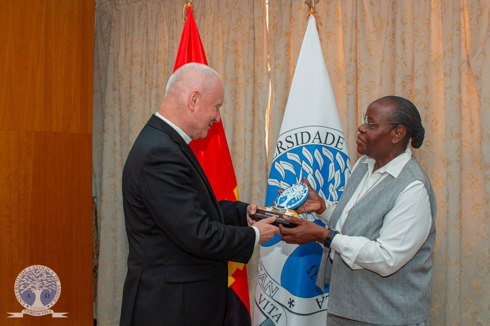
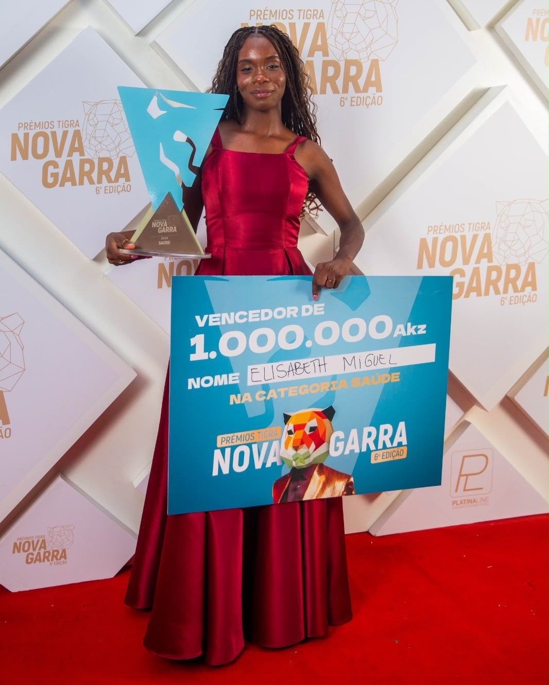

CAMPUS NEWS
UCAN
🎓 Cerimónia
UNIVERSIDADE CATÓLICA DE ANGOLA OUTORGA DIPLOMAS
Ver → 🎓 Académico
🎓 Académico
FACULDADE DE CIÊNCIAS HUMANAS REALIZA VISITA ACADÉMICA À TPA
Ver →
🎉 Eventos
UCAN FAIR TECH FEIRA DE TECNOLOGIA
Ver → 🤝 Cooperação
🤝 Cooperação
UNIVERSIDADE CATÓLICA DE ANGOLA REALIZA CERIMÓNIA DE ASSINATURA DO PROTOCOLO DE COOPERAÇÃO ENTRE ARC E UCAN
Ver →
🌍 InternacionalUNIVERSIDADE CATÓLICA DE ANGOLA RECEBE REITOR DA JOHN PAUL II CATHOLIC UNIVERSITY OF LUBLIN DA POLÓNIA
Ver → 📚 Biblioteca
📚 Biblioteca
BIBLIOTECA DA UCAN PROMOVE 5.ª EDIÇÃO DO OPEN DAY
Ver → 🎭 Cultura
🎭 Cultura
UCAN | PASTORAL UNIVERSITÁRIA - DIA DE ÁFRICA NA UNIVERSIDADE CATÓLICA DE ANGOLA
Ver →
🏅 PrémiosESTUDANTE DA UCAN DISTINGUIDA COM O PRÉMIO TIGRA NOVA GARRA NA CATEGORIA SAÚDE
Ver → 🎓 Académico
🎓 Académico
UNIVERSIDADE CATÓLICA DE ANGOLA REFORÇA PREPARAÇÃO INTEGRAL DOS FINALISTAS
Ver → ⚖️ Direitos
⚖️ Direitos
CENTRO DE DIREITOS HUMANOS E CIDADANIA DA FACULDADE DE DIREITO DA UNIVERSIDADE CATÓLICA DE ANGOLA
Ver → 🎭 Cultura
🎭 Cultura
UNIVERSIDADE CATÓLICA DE ANGOLA REALIZA COM SUCESSO A 23.ª EDIÇÃO DO DESFILE ACADÉMICO
Ver → 🎓 Cerimónia
🎓 Cerimónia